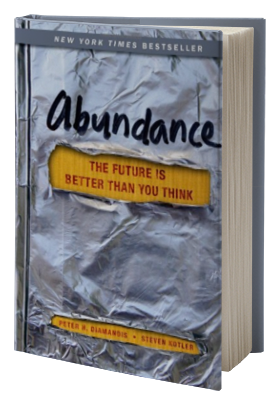

The Mythical Man-Month: Essays on Software Engineering, Anniversary Edition (2nd Edition)
Frederick P. Brooks, Jr.
ISBN: 9780743453363
NILE Price: $23.99
Genre: Engineering, Programming, Computer Science
Release Date: 1995-08-12
Description:
Few books on software project management have been as influential and timeless as The Mythical Man-Month. With a blend of software engineering facts and thought-provoking opinions, Fred Brooks offers insight for anyone managing complex projects. These essays draw from his experience as project manager for the IBM System/360 computer family and then for OS/360, its massive software system. Now, 20 years after the initial publication of his book, Brooks has revisited his original ideas and added new thoughts and advice, both for readers already familiar with his work and for readers discovering it for the first time.